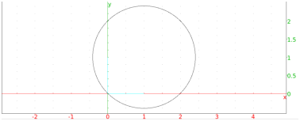
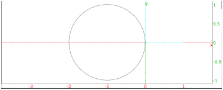
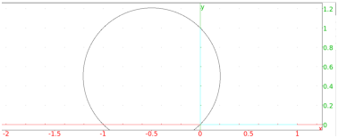
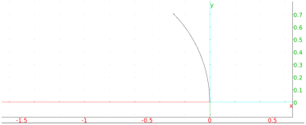
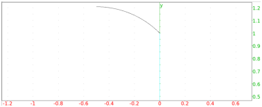

12.11.1 Circles and arcs in the plane: circle
See also section 12.11.2.
See section 13.10 for circles in space.
The circle command returns and draws a circle or arc of a circle,
depending on the arguments.
circle can take the following arguments:
-
One argument, the equation of a circle with variables x and
y (or an expression assumed to be set to 0).
circle returns and draws the circle.
Input:
circle(x2 + y2 - 2*x - 2*y)
Output:

- Two arguments, a point and a complex number.
circle returns and draws the circle centered at the
point and whose radius is the modulus of the complex number.
Input:
circle(-1,i)
Output:

- Two arguments, both points (where the second is the value of
point and not simply the affix).
circle returns and draws the circle with a diameter given
by the two points.
Input:
circle(-1,point(i))
Output:

- Four mandatory arguments and two optional arguments.
The mandatory arguments are a point C, a
complex number r, and two real numbers. The
arguments C and r determine a circle, as above.
The two real numbers specify the central angles
that determine an arc, where the angles start on the axis defined by
the points C and C + r.
circle returns and draws the arc.
Input:
circle(-1,1,0,pi/4)
Output:

The optional arguments need to be
variable names which will be assigned to the ends of the arc.
- Four mandatory arguments and two optional arguments.
The mandatory arguments are two points A
and B and two real numbers. The
points A and B determine a circle, as above.
The two real numbers specify the central angles
that determine an arc, where the angles start on the axis defined by
the diameter AB.
circle returns and draws the arc.
Input:
circle(-1,point(i),0,pi/4)
Output:

The optional arguments need to be
variable names which will be assigned to the ends of the arc.